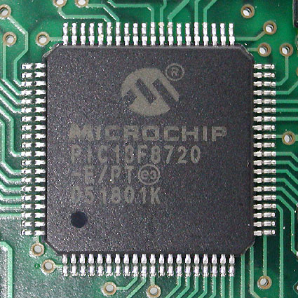

SIGNAL TRANSLATION
THE TINY CONTROLLER

COMMONS / PIC18F MCU
> MATRIX SCAN ENGINE (1000 Hz POLLING)
> DETECTED: ROW 03 | COL 04
> TRANSLATE ➔ SCAN CODE: 0x04 (KEY 'A')
"A tiny microcontroller constantly scans this grid, detects the exact coordinate, and translates it into a standard scan code."